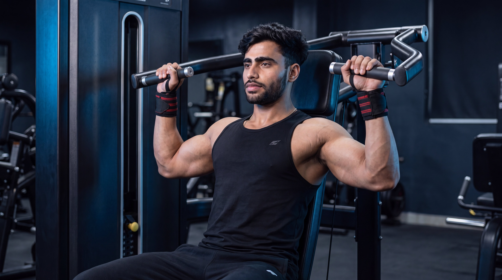
BeginnerShoulder Press
Build shoulder strength and overhead pressing power with a stable, controlled compound movement.
View ExerciseExplore step-by-step shoulder exercise guides designed to help you master proper form, understand muscle activation, avoid common mistakes, and develop strength with confidence.
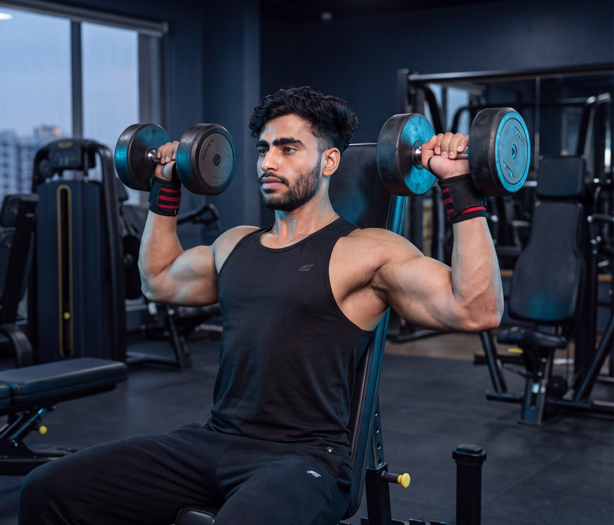
Explore our shoulder exercise library and learn proper technique, muscle activation, common mistakes, and practical coaching tips for every movement.

BeginnerBuild shoulder strength and overhead pressing power with a stable, controlled compound movement.
View ExerciseTrain each side independently while developing shoulder strength, stability, and overhead control.
View Exercise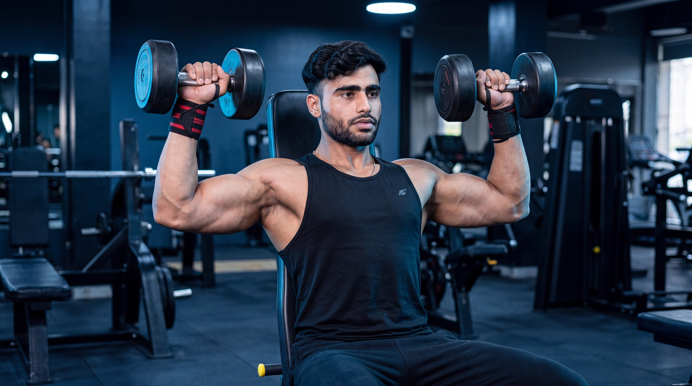
IntermediateCombine rotation and overhead pressing to challenge the shoulders through a dynamic range of motion.
View Exercise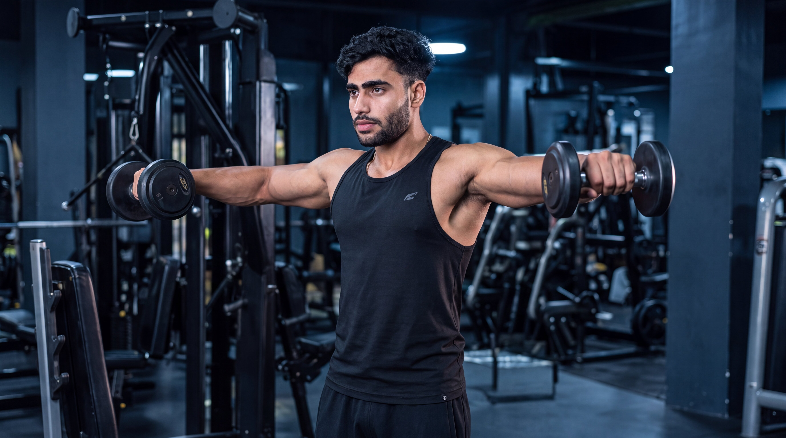
BeginnerTarget the side delts with controlled arm elevation to help develop stronger, broader shoulders.
View Exercise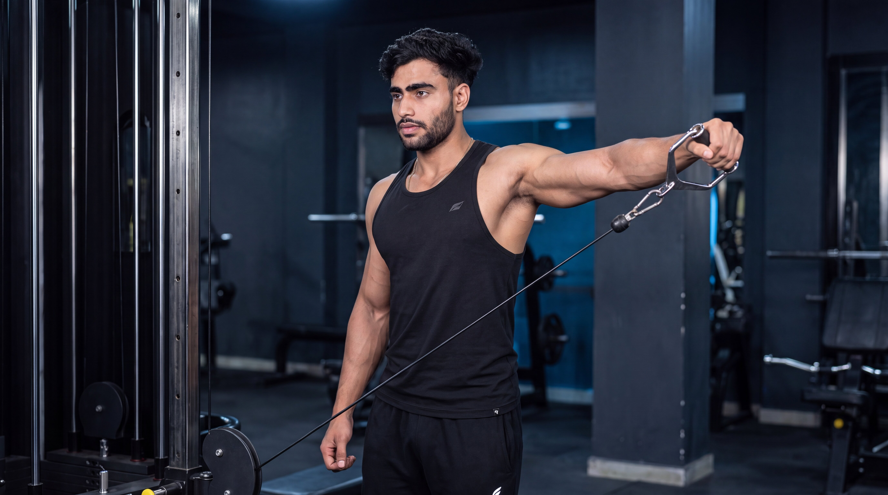
IntermediateMaintain continuous tension on the side delts through a smooth and controlled cable resistance pattern.
View Exercise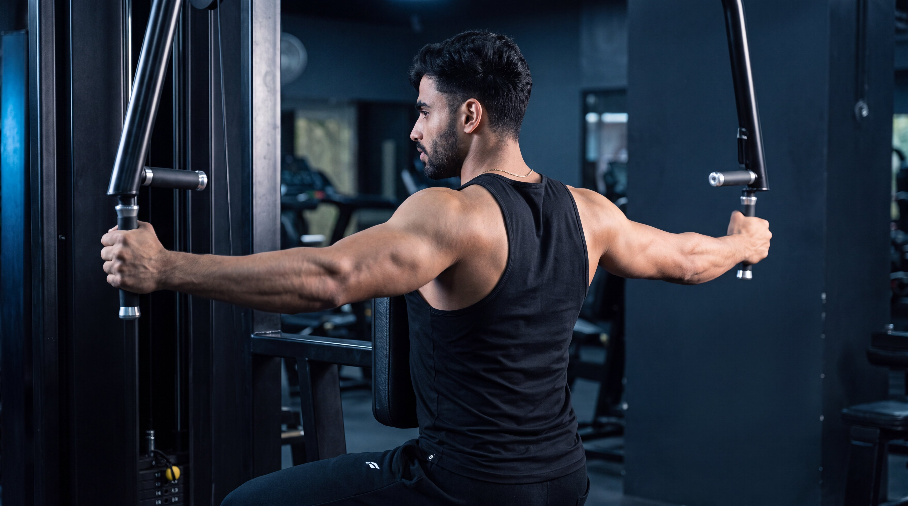
BeginnerIsolate the rear delts with a stable machine-guided movement designed for controlled shoulder extension.
View Exercise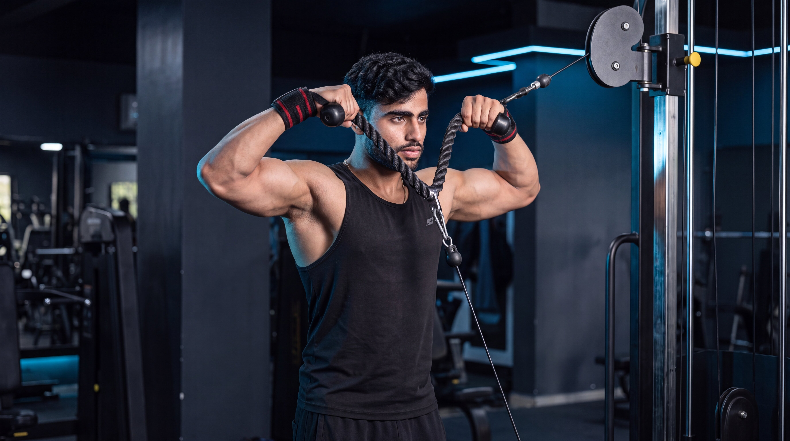
IntermediateStrengthen the rear delts and upper back while developing controlled shoulder movement and stability.
View Exercise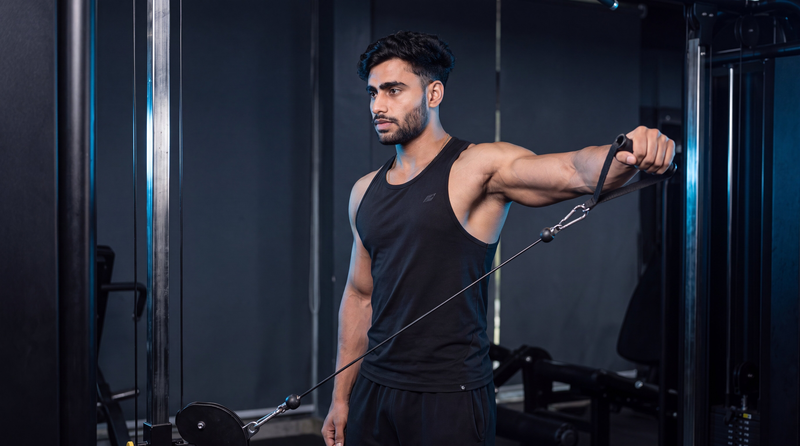
IntermediateTrain each side independently with continuous cable tension to develop side-delt control and symmetry.
View ExerciseDifferent shoulder exercises serve different purposes. Choose your movement based on whether you want to build overhead strength, develop wider side delts, strengthen the rear delts, or train the shoulders through a more dynamic pressing pattern.
Focus on compound overhead pressing movements that allow progressive overload while developing shoulder strength, stability, and pressing power.
Use lateral raise variations to emphasize the side deltoids and develop greater shoulder width through controlled arm elevation and consistent tension.
Choose rear-delt movements to strengthen the back of the shoulders and develop greater control through horizontal pulling and outward arm movement.
Use rotational pressing and unilateral cable movements to challenge shoulder control, coordination, and muscular development through varied movement patterns.
Go beyond the surface. Explore cinematic anatomy videos that reveal how your shoulder muscles, joints, and movement mechanics work during every repetition.
Watch what happens beneath the skin as the shoulders, triceps, and supporting muscles coordinate through every phase of the dumbbell shoulder press.
See how the deltoids and supporting muscles contribute throughout the repetition.
Understand how the shoulders, elbows, and arms coordinate during overhead pressing.
Connect anatomy with better exercise execution and controlled pressing mechanics.
Select an exercise to explore its cinematic under-the-skin breakdown.
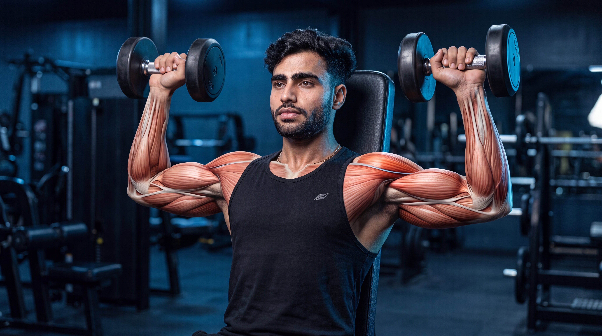
Hindi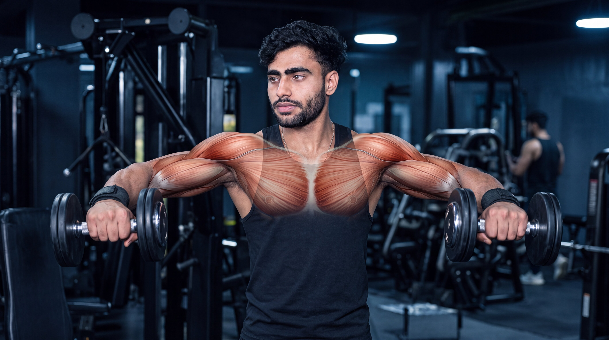
Hindi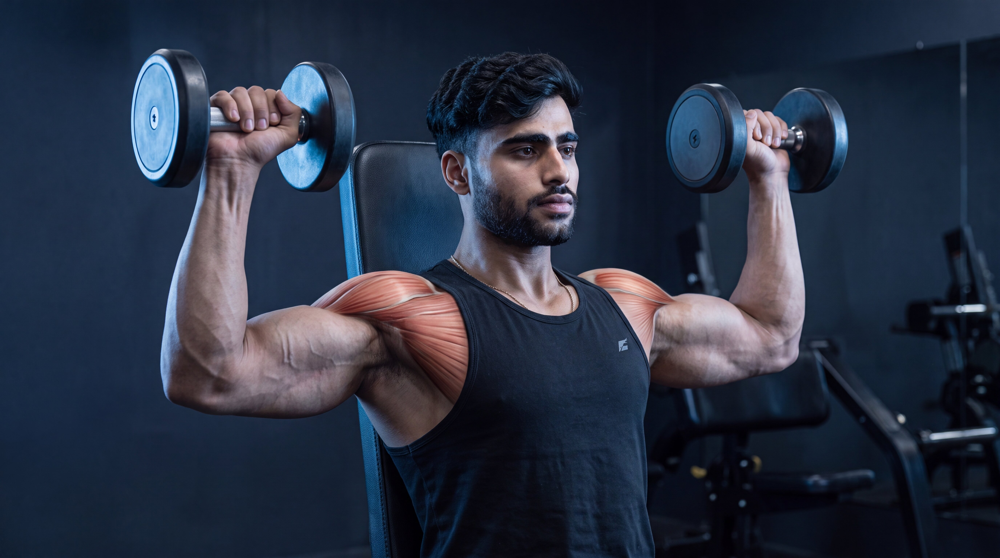
Hindi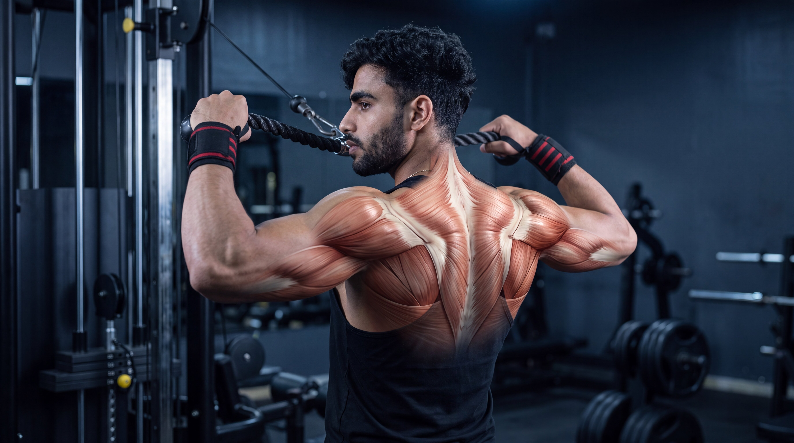
HindiBuilding stronger shoulders is not only about pressing heavier weights. Exercise selection, movement control, balanced deltoid development, and consistent progression all shape long-term strength and muscular development.
Master the fundamentals first. Then make every repetition more purposeful.
The shoulders include front, side, and rear deltoid regions with different roles in movement. Use a balanced combination of pressing, lateral raises, and rear-delt exercises for complete development.
Use a comfortable range of motion with stable positioning and controlled tempo. Avoid excessive swinging, shrugging, or momentum simply to move heavier weights.
Progress does not always mean adding more weight. More controlled repetitions, improved technique, greater range of motion, or gradual load increases can all represent meaningful progress.
Overhead presses build shoulder strength and train several upper-body muscles together, while lateral and rear-delt movements provide more focused muscular work. Use both strategically.
Get clear, practical answers to common questions about shoulder exercises, training frequency, technique, and balanced deltoid development.
For many people, around three to five shoulder exercises in a workout can be enough, depending on training experience, weekly frequency, exercise selection, and total training volume. Focus on quality movements that provide balanced work for the front, side, and rear deltoids.
Many people train their shoulders one to three times per week depending on their program, experience, recovery, and total weekly volume. Remember that the shoulders also contribute during many chest and back exercises, so consider your entire training program when planning direct shoulder work.
A balanced shoulder program should consider the front, side, and rear deltoid regions. Pressing movements strongly involve the front delts, lateral raises emphasize the side delts, and reverse fly or face-pull variations can provide more direct work for the rear delts.
The trapezius muscles naturally contribute to shoulder movement, but excessive shrugging may become more noticeable when using too much weight or relying on momentum. Use a manageable load, keep the movement controlled, and avoid deliberately lifting the shoulders toward the ears during each repetition.
Not necessarily in every workout, but combining both movement types across your training program can support more balanced shoulder development. Overhead presses build pressing strength, while lateral raises and rear-delt exercises provide more focused work for specific shoulder regions.
Front raises are not mandatory for everyone because the front deltoids already receive significant work during overhead presses and many chest-pressing exercises. Whether you add direct front-delt work depends on your goals, current program, recovery, and individual needs.
Training needs vary between individuals. Choose exercises and training volume that match your experience, goals, recovery, and comfort.
Strength is built through balanced training. Explore more muscle groups, discover new exercises, and keep building your knowledge one movement at a time.